의공산업기사 (2014-09-20 기출문제)
1과목: 기초의학 및 의공학
1. 폐활량 산출식으로 옳은 것은?
- 폐활량=일호흡량+예비흡기량+예비호기량
- 폐활량=일호흡량×예비흡기량×예비호기량
- 폐활량=일호흡량×예비흡기량+예비호기량
- 폐활량=(일호흡량+예비흡기량)/예비호기량
(정답률: 89%)

2. 세포막을 사이에 두고 세포 내부와 외부에 많이 분포하는 이온을 나열한 것으로 옳은 것은?
- 내부:Na+, 외부:K+
- 내부:K+, 외부:na+
- 내부:K+, 외부:K+
- 내부:Na+, 외부:Na+
(정답률: 83%)
3. 다음 혈관 중 혈액의 속도가 가장 느린 것은?
- 대동맥
- 동맥
- 모세혈관
- 정맥
(정답률: 84%)
4. 신경전달 물질인 아세틸콜린에 대한 설명으로 옳지 않은 것은?
- 아세틸콜린은 알레르기와 염증 반응의 매개체이면서 위산 생성의 자극제 그리고 뇌의 여러 부분에서 신경전달물질로 작용한다.
- 아세틸콜린은 아세틸 CoA로부터 합성된다.
- 아세틸콜린을 분비하는 뉴런을 콜린성 뉴런이라 한다.
- 아세틸콜린에 결합하는 수용체를 콜린성 수용체라 한다.
(정답률: 70%)
5. 선형가변차동변환기의 설명으로 틀린 것은?
- 민감도가 높다.
- 선형성이 좁다.
- 위상변화가 있다.
- 유도전압을 측정한다.
(정답률: 87%)
6. 광센서에 적용되는 법칙으로 흡수물질의 두께와 에너지 흡수율의 관계를 설명하는 법칙은?
- Snell의 법칙
- Charles 법칙
- Nernst 법칙
- Beer의 법칙
(정답률: 71%)
7. 안구의 구조물 줄 빛의 굴절체가 아닌 것은?
- 초자체
- 수정체
- 각막
- 홍채
(정답률: 75%)
8. 신경세포에 달려 신경 자극을 좋게 하는 가느다란 세포질의 돌기로 신경세포체, 축색돌기와 함께 신경단위의 뉴런을 구성하는 것은?
- 수상돌기(dendrite)
- 말이집(mylin sheath)
- 백질(white marter)
- 슈반세포(schwann cell)
(정답률: 88%)
9. 평행판 모양의 용량성 센서에서 정전 용량을 변화시킬 수 있는 방법이 아닌 것은?
- 판의 유효 넓이
- 판 사이의 간격
- 유전체
- 전하량
(정답률: 77%)
10. 비분극 전극의 동잡음이 적은 이유는?
- 전극이 녹슬지 않아서
- 전극이 전해질에 녹지 않아서
- 전해질이 전극에 피막을 형성하기 때문에
- 전극과 전해질 간에 전하 이동이 가능해서
(정답률: 75%)
11. 다음 그림은 일회용 금속판 전극의 단면을 나타낸 것이다. 그림에서 Ⓔ 부분에 대한 설명으로 옳은 것은?
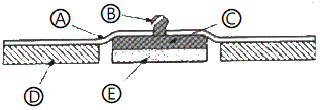
- 전해질 겔(electrolyte gel) 부분이다.
- 전극을 피부에 고정하는 접착 부분이다.
- 금속판(metal disk) 부분이다.
- 전극(electrode)과 전극선(리드선:lead wire)을 연결하는 부분이다.
(정답률: 90%)
12. 의용생체 센서가 갖추어야 할 조건 중 입력의 변화에 대한 출력의 변화가 일정한 비례 관계를 가져야 함을 뜻하는 특성은?
- 높은 강도
- 안정성
- 선형성
- 생체적합성
(정답률: 91%)
13. 생체신호 측정용 전극에 대한 설명 중 틀린 것은?
- 생체 내부에서는 이온에 의한 전류가 생성되고 전자 시스템 내에서는 자유전자의 이동에 의한 전류가 만들어진다.
- 생체표면에 금속 성분의 전극이 부착되면, 이온 작용에 의한 일정한 전위를 얻게 되는데, 이 때 얻어지는 전위 값은 온ㆍ습도와 무관하게 일정한 값을 얻을 수 있다.
- 금속전극과 전해질 경계면(interface)에서는 전하 분리현상에 의한 전기 이중층(electric doule layer)이 형성된다.
- 전극은 생체 내 이온에 의한 전류를 전자회로내의 자유전장데 의한 전류로 변환해 주는 변환기(transducer)의 역할을 한다.
(정답률: 89%)
14. 골다공증을 의미하는 단어는?
- osteoporsis
- arthritis
- dislocation
- sprain
(정답률: 82%)
15. 휴지기 전위를 조정하는 메커니즘에 대한 설명 중 옳은 것은?
- 휴지 상태의 세포막은 일반적으로 K+이온보다 Na+이온을 더 잘 통과시킨다.
- 삼투 현상에 의해 이온이 이동된다.
- 크기가 큰 음저하의 단백질은 세포막을 통과하여 세포 내에 존재하게 된다.
- Na+/K+ 펌프는 Na+ 이온 3개를 내보낼 때 K+ 이온 2개를 들여온다.
(정답률: 84%)
16. 물질에 어떤 발향으로 압축 또는 인장력을 가했을 때, 전기 분극이 일어나고 대응되는 단면에 분극전하가 나타나는 현상을 무엇이라 하는가?
- 압전 효과
- 전계 효과
- 광전 효과
- 에디슨 효과
(정답률: 85%)
17. 대장의 일부인 결장(colon)의 4부분에 해당하지 않는 것은?
- ascending colon
- transverse colon
- sigmoid colon
- median colon
(정답률: 79%)
18. 3대 영양소의 구성으로 옳은 것은?
- 탄수화물, 단백질, 지방
- 탄수화물, 단백질, 칼슘
- 탄수화물, 비타민, 지방
- 지방, 단백질, 무기질
(정답률: 89%)
19. 세포막 사이의 전위차를 측정하는 용도로 사용되는 전극은?
- 일회용 Ag-AgCl 전극
- 바늘형 전극(needle electrode)
- 금속판 전극(metal-plate electrode)
- 미세 전극(micro electrode)
(정답률: 70%)
20. 대뇌피질에 있는 수많은 뇌신결세포의 활동 전위를 두피 상에 장착 또는 삽입한 전극을 이용하여 도출하는 것으로, 수십 μN의 진폭을 갖는 미약한 전위는 무엇인가?
- 근전도(electromyogram, EMG)
- 유발전위(evoked Potential, EP)
- 심전도(electrocardiogram, ECG)
- 뇌전도((electroencephalogram, EEG)
(정답률: 93%)
2과목: 의용전자공학
21. 생체신호 측정전극으로 사용하는 대표적인 재질은?
- 아연(Zn)
- 금(Au)
- 알루미늄(Al)
- 은-염화은(Ag-AgCl)
(정답률: 89%)
22. 생체계측을 위한 기본 구성 중 신호처리에 대한 설명이 아닌 것은?
- 영상과 그래프 등의 적절한 데이터 결과물로 출력
- 증폭 혹은 감소해 과정을 통하여 신호의 크기 조정
- 여파기를 통하여 신호의 주파수 선택 및 잡음 제거
- 물리화학적인 측정량을 전기적 출력으로 변환
(정답률: 68%)
23. 제어시스템의 설계에 마이크로컨트롤러를 이용할 때의 특징을 모두 고른 것은?
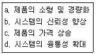
- a, b, c
- a, b, d
- b, c, d
- a, b, c, d
(정답률: 75%)
24. LC 발진기로서 가장 널리 사용되는 것은?
- 암스트롱(Amstrong)
- 클랩(Clap)
- 콜피츠(Colpitts)
- 하틀리(Hartley)
(정답률: 83%)
25. β=200, re=150Ω인 경우 베이스의 입력 임피던스는?
- 30Ω
- 600Ω
- 3Ω
- 5Ω
(정답률: 68%)
26. 입출력 장치와 주기억장치 사이의 데이터 전송을 담당하는 입출력 전담 장치는?
- 콘솔 장치
- 채널 장치
- 터미널 장치
- 상태 레지스터 장치
(정답률: 82%)
27. 전원회로의 기본 구성으로 가장 거리가 먼 것은?
- Rectifier
- Amplifier
- Filter
- Regulator
(정답률: 73%)
28. 두 개의 점전하 사이에 작용하는 힘의 크기는 두 점전하의 곱에 비례하며, 두 점전하 사이의 거리의 제곱에 반비례 한다는 것은 어떤 법칙인가?
- 쿨롱의 법칙
- 맥스웰의 법칙
- 가우스의 법칙
- 줄의 법칙
(정답률: 83%)
29. 생체현상의 특수성에 대한 설명으로 옳지 않은 것은?
- 일과성의 것이 적고, 재현성이 뛰어나다.
- 생체신호는 미약하고 일반적으로 S/N비가 적다.
- 개체의 차가 크며 개체 내에서는 항상성이 유지된다.
- 생체는 어떤 부분에 대한 특정신호를 순수한 형으로 추출하기 곤란하다.
(정답률: 75%)
30. 다음 회로에서 Vm의 파형으로 맞는 것은?
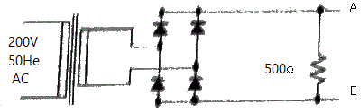
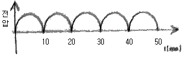
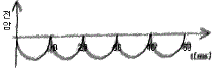
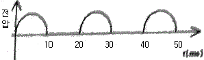
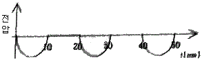
(정답률: 68%)
31. 정류기(rectifier)에 대한 설명으로 옳은 것은?
- 입력전압과 기준전압을 비교하는 회로
- 신호의 한 시점에 대한 순간 변화율을 계산하는 회로
- 출력전압을 정해진 값으로 고정하는 회로
- 교류전류를 적류전류로 변화하는 회로
(정답률: 86%)
32. 아주 큰 전류를 흘릴 수 있는 FET는?
- JFET
- 공핍형 MOSFET
- 증가형 MOSFET
- VMOSFET
(정답률: 66%)
33. 호흡기의 기능평가법에서 평가기능이 아닌 것은?
- 환기능
- 분포능
- 확산능
- 피폭능
(정답률: 85%)
34. 혈류 측정에 있어 광원으로부터 빛이 모세혈관을 통과, 투과하거나 뼈에서 반사되는 빛을 감지하는 계측방법으로 심장박동의 측정이 가능한 방법은?
- thermal conductivity detector
- Photo-plotthysmography
- Electromagentle flow meter
- water Spirometer
(정답률: 71%)
35. JK 플립플롭에서 J단자에 0, K단자에 1이 입력되었을 때 출력 단자의 상태를 옳게 짝지은 것은?
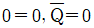
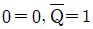
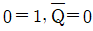
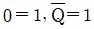
(정답률: 70%)
36. 평행판 콘덴서의 극판에 유전체(비유전율＞1)를 넣었을 때 일어나는 현상은?
- 정전용량이 증가하고 극판간의 전계는 감소한다.
- 정전용량이 증가하고 극판간의 전계는 증가한다.
- 정전용량은 감소하고 극판간의 전계는 감소한다.
- 정전용량은 감소하고 극판간의 전계는 증가한다.
(정답률: 59%)
37. KFET의 규격표에서 Ioss=7mA이고 V98(off)=-3V이다. 게이트-소스간 전압이 -1V일 때 드레인 전류 mA는?
- 1.12
- 3.12
- 2.21
- 4.12
(정답률: 61%)
38. 정류기에 보편적으로 사용하는 캐피시터 필터에서 리플 부분의 직진성을 높이는 방법은?
- 필터의 정전용량 C를 작게 한다.
- 필터의 정전용량 C를 크게 한다.
- 순방향 전압이 낮은 다이오드를 사용한다.
- 방전 시정수를 작게 한다.
(정답률: 70%)
39. 생체전기신호에 해당되지 않는 것은?
- 심음도
- 근전도
- 뇌전도
- 심전도
(정답률: 91%)
40. 다음 게이트 회로의 출력과 같은 회로는?
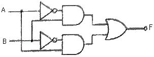
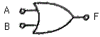
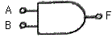
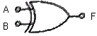
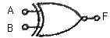
(정답률: 74%)
3과목: 의료안전ㆍ법규 및 정보
41. 진단용 방사선 발생장치에 해당하지 않는 것은?
- 유방 촬영용 장치
- 진단용 엑스선 장치
- 자가공명 영상 장치
- 전산화 단층 촬영 장치
(정답률: 86%)
42. 다음 중 의료가스의 용도가 다른 것은?
- 구급용
- 마취용
- 인공호흡용
- 특수용접용
(정답률: 87%)
43. 의료기기 품목 및 품목별 등급에 관한 규정 중 의료용 흡입기 분류에 속하지 않는 것은?
- 초음파 흡입기
- 투과식 흡입기
- 진단용 흡입기
- 의료용 분무기
(정답률: 71%)
44. 의료기기의 기준규격, 추적관리대상 의료기기에 관한 사항을 조사ㆍ심의하기 위하여 설치하는 위원회는?
- 의료기기위원회
- 의료지원심의위원회
- 의료심사조정위원회
- 보건정책기획조정위원회
(정답률: 74%)
45. 의료정보학의 역사에 대한 설명으로 옳지 않은 것은?
- 1970년에 R. Ledley가 영상정보시스템을 개발
- 의료정보학이란 용어는 1960년대 말 유럽에서부터 사용되기 시작
- 1980년대에 들어와서 전자의무기록(EMR)이 일반화되기 시작
- 1990년대 인터넷의 발전과 더불어 사용자 중심의 시스템으로 성장
(정답률: 68%)
46. ICPC 분류체계에 대한 설명으로 옳지 않은 것은?
- 외래방문, 입원, 수술 등의 임상적 상황을 코드화 하는데 사용하기 위하여 사용하였다.
- 모든 개념은 계층구조로 정리되어 있으며 새오운 계층은 좀 더 복잡한 개념을 나타낼 수 있다.
- 제약모듈에서 데이터와 약 코드가 자동으로 생성되어 저장된다.
- SOAP 원리를 코드화 하는데 쓰인다.
(정답률: 56%)
47. 혈압 검사 또는 맥파 검사용 기기의 품목 중 등급이 다른 것은?
- 맥파계
- 안저혈압계
- 혈압감시기
- 수은주식혈압계
(정답률: 78%)
48. 다음 ()안에 알맞은 것은?
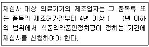
- 5
- 7
- 10
- 20
(정답률: 73%)
49. 의료기기의 생물학적 안전에 관한 공통기호 규격에서 인체에 삽입되는 의료기기로써 조직에 접촉하여 접촉시간이 24시간 미만인 제품에 대한 시험항목이 아닌 것은?
- 세포독성시험
- 감작성
- 자극성시험
- 이식시험
(정답률: 78%)
50. 다음은 PACS에 대한 설명이다. 잘못 연결된 것은?
- P: Picture
- A: Archlving
- C: Computer
- S: System
(정답률: 79%)
51. 자료보호 측면에서 물리적으로 파일을 보호하기 위해 필요한 예방책에 속하지 않는 것은?
- 자료의 암호화
- 파일의 정규적인 백업
- 전산센터 보호를 위한 보안 장치 설치
- 보호영역 내에 하드웨어의 설치
(정답률: 66%)
52. 혈액전염병 및 뇌막염의진단, 치료, 조언 시스템을 위해 만들어진 의료 전문가 시스템 응용분야의 명칭은?
- MYCIN
- EXPERT
- PROSPECTOR
- CENTAUR
(정답률: 75%)
53. 원격의료의 장점이 아닌 것은?
- 데이터의 공유와 손쉬운 접근성으로 인해 지속적인 진료가 가능하다.
- 지역적인 위치에 관계없이 가장 적절한 장소에서 가장 적절한 의료진에 의해 올바른 처치가 가능하다.
- 의료의 위치 종속성을 극복하고 의료진이 환자에게 직접 약물 투여가 가능하다.
- 위치에 관계없이 다른 병원 또는 의료진과 상담을 하더라도 진료를 위한 검사의 불필요한 중복을 피할 수 있다.
(정답률: 85%)
54. 환자의 과거, 현재의 건강과 진료를 포함하여 생활력과 건강력의 적합한 사실을 장기적으로 모아 전자적인 건강정보로서 기록한 개념을 무엇이라고 하는가?
- Automated Medical Record(AMR)
- Computerized Medical Record(CMR)
- Electronic Smart Record(ESR)
- Electronic Health Record(EHR)
(정답률: 78%)
55. 추적관리대상 의료기기 중 인체 안에 1년 이상 삽입되는 의료기기로 지정된 대상이 아닌 것은?
- 이식형 인공심장 박동기
- 혼합재질 인공심장판막
- 이식형 심장 충겨기
- 전기배뇨억제기
(정답률: 80%)
56. 의료기기의 일부로서 정상동작 시 환자와 접촉되는 부분을 무엇이라고 하는가?
- 외장함
- 증폭기
- 선택기
- 장착부
(정답률: 84%)
57. 의료기관만으로 바르게 구성된 것은?
- 보건소, 접골원, 치과병원
- 보건소, 요양병원, 산후조리원
- 치과병원, 보건소, 요양병원
- 종합병원, 치과병원, 요양병원
(정답률: 87%)
58. 매크로 쇼크에 대한 안전대책으로 의료기기의 금속제외함 등 노출 도전성 부분에 시설하는 접지방식은?
- 등전위 접지
- 보호 접지
- 정전기 방지용 접지
- 잡음방지용 접지
(정답률: 67%)
59. 전자파에 대한 설명 중 틀린 것은?
- 전자파의 파장이 갈수록 에너지는 커지고 높은 투과율을 갖는다.
- 전자파는 광속으로 진행한다.
- 전자파의 수파수와 파장은 서로 반비례 관계이다.
- 전자파는 도달거리가 멀어질수록 약해지는 성질이 있다.
(정답률: 75%)
60. 의료법령상 의료기관의 관리자가 진료에 관한 기록 중 환자명부를 보존해야 하는 기간은?
- 10년
- 5년
- 3년
- 1년
(정답률: 79%)
4과목: 의료기기
61. 방광 삽입형으로 사용되는 카테터의 명칭으로 맞는 것은?
- urinary 카테터
- stomach 카테터
- liver 카테터
- disk 카테터
(정답률: 68%)
62. 정상 심전도의 파형 중에서 심실의 탈분극에 해당하는 것은?
- P wave
- QRF complex
- T wave
- U wave
(정답률: 73%)
63. 레이저 의료기기의 최대 허용 노광량을 산정하는 기준이 아닌 것은?
- 노출시간
- 레이저매질
- 레이저파장
- 펄스지속시간
(정답률: 69%)
64. 동맥혈관에 혈맥의 흐름이 멈출 때까지 압박대에 공기압력을 가한 후 압박대의 압력을 서서히 줄이면서 압박대(Cuff)내 압력의 진동을 측정하여 혈압을 측정하는 방법은?
- 초음파 감지법(Doppler 법)
- 촉지법
- 카테터 측정법
- 오실로메트릭법
(정답률: 77%)
65. 유리 기구, 도자기 기구 등의 멸균에 사용하며, 150~160℃에서 30~60분간 가열하여 멸균하는 방식은?
- 고압증기 멸균
- 간열 멸균
- 자불 소독
- EOG 멸균
(정답률: 76%)
66. 인공심폐기의 구성요소가 아닌 것은?
- 저혈조(blood reservoir)
- 정맥 캐뉼라(venous cannula)
- 열교환기(heat exchanger)
- 증류수(distilled water)
(정답률: 73%)
67. 페이스메이커에 대한 설명으로 틀린 것은?
- 페이스메이커는 임시형 페이스메이커와 영구형 페이스메이커로 나뉜다.
- 영구형 페이스메이커는 전극과 본체 모두 이식한다.
- 임시형 페이스메이커의 전원은 체내에 있다.
- 영구형 페이스메이커를 이식한 환자는 MRI촬영시 제약을 받을 수 있다.
(정답률: 86%)
68. 임시형 페이스메이커를 사용한 응급처치의 설명으로 틀린 것은?
- 경정맥 심박조율:전극을 방사선 투시기를 사용해 내경 정맥 등의 정맥을 통해 삽입하고 전기 자극을 전달한다.
- 경흥부 심받조율:흉벽에서 조율 전극선을 직접 심실 벽에 삽입하는 방법이다.
- 경식도 심박조율:전극을 식도를 통해 삽입, 조율한다.
- 경피적 심받조율:전극을 표피 아래층에 삽입하는 방법이며, 간단한 시술로 인해 많이 사용된다.
(정답률: 72%)
69. 세동제거기에 있는 16μF의 커패시터에 5000V가 충전되어 있을 때 저장된 에너지는?
- 100J
- 200J
- 300J
- 400J
(정답률: 52%)
70. 초음파 영상 촬영 방식 중 단면 영상을 보여주는 것은?
- A-mode
- M-mode
- TM-mode
- B-mode
(정답률: 79%)
71. 제세동기는 위험한 부정맥을 치료하는 방법 중의 하나이다. 제세동에 관한 설명 중 틀린 것은?
- 제세동 시 가해지는 에너지는 경우에 따라 달라진다.
- 세동을 제거하는 것을 의미하며 빨리 시행할수록 좋은 결과를 가져온다.
- 심각한 심장질환을 치료하는 근본적인 방법이다.
- 심정지에 위험이 생길 수 있는 심실세동이 나타날 때 사용된다.
(정답률: 74%)
72. 혈압 측정 방법 중 직접 동맥혈압을 측정하기 위해 카테터를 가장 많이 이용하는 동맥으로 옳은 것은?
- 요골, 상완
- 요골, 족배
- 족배, 대퇴
- 액와, 대퇴
(정답률: 66%)
73. 엑스선 촬영에 사용되는 엑스선 발생장치와 관계가 없는 것은?
- 고주파코일
- 관전압
- 관전류
- 초점크기
(정답률: 71%)
74. 마취기 시스템의 구성요소가 아닌 것은?
- 증발기
- 통풍기
- 청소기 시스템
- 응축기
(정답률: 71%)
75. X-선이 인체 조직을 통과하면서 조직의 물리적인 특성에 의해 X-선 감쇄 특성이 달라지는 특성을 이용하여 회전주사와 선형주사로 영상을 재구성하는 의료영상기기는?
- X-선 촬영기
- CT 촬영기
- MRI 촬영기
- PET 촬영기
(정답률: 75%)
76. 전기수술기에 대한 설명으로 틀린 것은?
- 전기수술기는 당근방식과 양극방식이 있다.
- 대극판은 체내에 흐르는 전류를 다시 본체오 돌려 보낸다.
- 대극판은 인체와 접촉이 적을수록 좋다.
- 절개는 응고보다 더 높은 출력을 필요로 한다.
(정답률: 77%)
77. 레이저의 특성으로 옳은 것은?
- 간섭성
- 반사성
- 열성
- 다색성
(정답률: 67%)
78. CR(COmputed Radiograbhy)과 DR(DigitaI RAdiography)에 대한 설명 중 틀린 것은?
- DR은 간접변환방식과 직접변환방식으로 구분될 수 있다.
- CR은 Film을 사용하여 X-ray를 검출한다.
- DR은 사용되는 센서와 패널에 따라 CMOS/CCD법과 평판패널(Flat Panel)법으로 나뉜다.
- 영상정보는 컴퓨터로 입력되기 때문에 여러 가지 영상처리를 쉽게 할 수 있다.
(정답률: 63%)
79. 표준전극법(Lead Ⅰ, Ⅱ, Ⅲ)으로 심전도를 측정할 때 전극을 부착하지 않는 부위는?
- 오른손
- 왼손
- 오른다리
- 왼다리
(정답률: 86%)
80. 환자가 자연스런 호흡을 하면서 인공호흡기가 정해진 1회 호흡량을 정해진 횟수에 따라 전달하는 방식으로 환자의 자발적인 호흡사이에 치료자가 설정한 강제적환기를 삽입하는 형태의 호흡조절방식은?
- VCV
- CMV
- PEEP
- IMV
(정답률: 74%)
5과목: 의용기계공학
81. 인체의 구조적 결함이나 기능이 상실 및 저하된 곳을 인위적인 기구나 장치를 통하여 기능회복, 직ㆍ간접적인 치유, 악화를 방지해주는 장치는?
- 의지
- 보조기
- 인공관절
- 스텐트
(정답률: 79%)
82. 피치가 10mm인 2줄 나사의 리드는?
- 10mm
- 20mm
- 30mm
- 40mm
(정답률: 74%)
83. 고분자 생체재료의 기계적 생체적합성으로 고려해야 할 성질이 아닌 것은?
- 미반응 단량체(monoer)의 양
- 인장 강도
- 압축 강도
- 탄성 계수
(정답률: 80%)
84. 혈액백(bag)이나 수액백(bag)을 만들 때 사용되어지나 인체유해성의 문제가 제기되는 고분자는?
- 실리콘
- 폴리에틸렌(PE)
- 폴리비닐클로라이드(PVC)
- 테프론(PTFE)
(정답률: 75%)
85. 하지의지의 종류가 아닌 것은?
- 고관절의지
- 슬관절의지
- 대퇴의지
- 견갑의지
(정답률: 82%)
86. 생체 조직의 도전율에 관한 설명으로 옳지 않은 것은?
- 세포막의 도전율은 세포간질이나 원형질의 도전율에 비해 현저하게 작다.
- 골격근의 도전율은 혈액의 도전율에 비하여 현저하게 크다.
- 골격근의 도전율은 이방성을 나타낸다.
- 폐는 공기를 포함하고 있기 때문에 도전율이 현저히 낮다.
(정답률: 74%)
87. 생체의 심부 가온에 이용되지 않는 에너지는?
- 적외선
- X-선
- 초음파
- 전자파
(정답률: 63%)
88. 인공 뼈로 가장 많이 활용되는 세라믹스 재료는?
- 알루미나
- 지르코니아
- 수산화아파타이트
- 카본 세라믹스
(정답률: 77%)
89. 베어링의 마찰상태에서 완전윤활마찰을 설명한 것은?
- 마찰저항이 가장 크며 발열이 크다.
- 마찰저항이 가장 작으며 발열이 크다.
- 마찰저항이 가장 크며 발열이 작다.
- 마찰저항이 가장 작으며 발열이 작다.
(정답률: 78%)
90. 기어의 피치원 지름을 D, 기어의 잇수를 Z라 할 때 모듈은?
- Z/D
- πZ/D
- D/Z
- πD/Z
(정답률: 70%)
91. 각 관절을 둘러싸고 있는 형태에 따라 분류한 삼지보조기가 아닌 것은?
- 견-주관절 보조기(SEO:Shoulder Elbow Orthosis)
- 주관절 보조기(EO:Elbow Orthosis)
- 수근관절 보조기(WHO:Wrist Hand Orthosis)
- 장하지보조기(KAFO:Knee Ankle Foot Orthosis)
(정답률: 77%)
92. 4kN의 하중을 받는 폭 800m, 두께 10mm인 강판에 허용 전단응력이 20N/mm2이고 지름이 10mm인 리벳을 이용하여 1줄 겹치기 리벳이음을 하려고 한다. 리벳의 허용 전단 응력을 고려할 때 최소 필요한 리벳의 수는 얼마인가?
- 2
- 3
- 4
- 5
(정답률: 54%)
93. 나사의 유효지름이 d, 리드가 L, 리드각이 a일 때 옳은 것은?
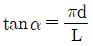
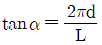
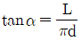
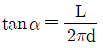
(정답률: 69%)
94. 일반적으로 방사선의 생물학적인 효과와 관련이 없는 요인은?
- 방사선의 조사선량
- 선량율
- 방사선 조사부위
- 조사부위의 온도
(정답률: 80%)
95. 생체조직과 생체재료가 접촉하면 주변의 단백질은 형상변화, 부착 또는 이탈과 같은 생리 화학적 반응을 유발하고, 세포끼리는 생리 화학적 신호를 교환하게 된다. 그 결과 나타나는 현상이 아닌 것은?
- 세포의 수가 조절된다.
- 생체재룓의 화학조성이 변화된다.
- 세포의 기능을 통합하고 조절하기 위해서 새로운 신경이 생성된다.
- 필요한 산소와 영양분을 공급받기 위해서 새로운 혈관이 생성된다.
(정답률: 55%)
96. 탄성재료에서 합중부가와 하중제거 경로로 둘러싸인 면적을 측정하게 되면 변형 및 회복과정에서 열로 방산되는 에너지를 계산할 수 있다. 이를 무엇이라고 하는가?
- Hysteresis loop
- Stress Relaxation
- Creep
- Yield Steress
(정답률: 72%)
97. 생체재료에 대하여 인장시험을 실시하고자 할 때, 인장시험기에 부착된 장치 중에서 하중을 측정할 수 있는 것은?
- 로드 쉘(load cell)
- 스트레인 게이지(strain gauge)
- 전위차계(potentometer)
- 제타미터(zetta meter)
(정답률: 65%)
98. 정형외과용 인공고관절을 사람에게 시술하려 한다. 인체내에서 임플란트가 거부반응을 나타내지 않기 위해서 필요한 특성은?
- 제조 가능성
- 생체 적합성
- 광학적 심미성
- 기계적 안정성
(정답률: 76%)
99. 초음파의 전파속도가 빠른 것부터 순서대로 나열된 것은? (단, 공기는 0℃, 1기압 기준)
- 근육＞간장＞두개골
- 간장＞두개골＞공기
- 두개골＞근육＞공기
- 간장＞공기＞근육
(정답률: 78%)
100. 초음파의 생리적 효과가 아닌 것은?
- 조직 온도 상승
- 조직의 대사 증가
- 혈관수축 및 혈류량 감소
- 생체막 투과성 상승
(정답률: 72%)
이유는 다음과 같다.
- 일호흡량: 한 번의 호흡으로 들이마시는 공기의 양을 말한다.
- 예비흡기량: 폐에 남아있는 공기 중에서 호흡이 끝난 후에도 남아있는 공기의 양을 말한다.
- 예비호기량: 폐에서 완전히 내쉬지 않는 공기의 양을 말한다.
따라서, 폐활량은 일호흡량에 예비흡기량과 예비호기량을 더한 값이다. 이는 폐에서 들이마신 공기와 함께 남아있는 공기의 양을 모두 고려한 것이다.